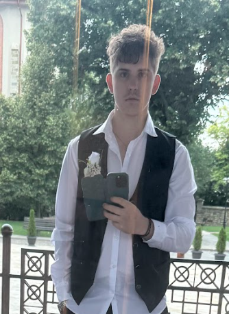

Radu Pavel Ghervan
Soy un estudiante de SMX i este es la pagina web donde hay mas informacion personal.
Hola me presento me llamo Radu Pavel Ghervan, tengo 21 años,soy de Rumania de un pueblo llamado Rafaila que esta al lado de Negresti,estuve hatsa los ocho años alli y cumpli los nueve años aqui en españa,me gusta salir con mis amigos,me gusta jugar, i me encanta el dinero, estoy estudiando el hambito de la informatica por el sueldo i porque desde que tuve mi primer portatil pense en com funcio a nivel de software i hardware hoy en dia comprendo mejor el funcionamiento basico a nivel maquinaria de un ordenador y a su vez entiendo mejor el programario de los ordenadores no tengo mucha experiencia a nivel laboral en este hambito pero si se lo fundamental i com encontrar la informacion necessaria para desenvoluparme en cuanto las dos funcionalidades basicas de cualquier ordenador (maquinaria y programario)
